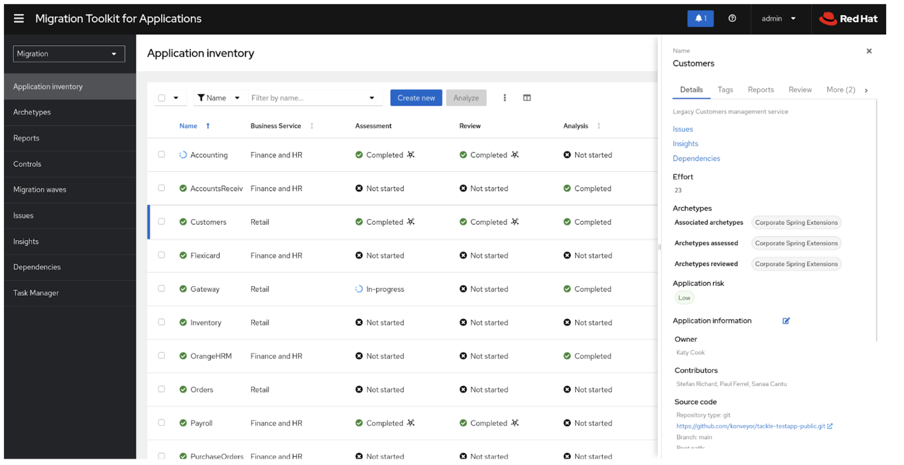

Scaling Application Modernization with MTA
In the previous lesson, you learned how Migration Toolkit for Applications (MTA) analyzes existing applications and recommends an appropriate modernization strategy.
In this lesson, you’ll see how organizations use MTA to modernize entire application portfolios—not just a single application—by standardizing assessments, sharing migration knowledge, and coordinating multiple migration teams.
| Most enterprises modernize hundreds of applications. MTA helps prioritize, organize, and scale that modernization effort. |
Modernizing an Application Portfolio
Migrating one application is relatively straightforward.
Modernizing hundreds or thousands of applications requires organizations to answer important questions:
-
Which applications should be modernized first?
-
Which applications depend on each other?
-
How much effort will each migration require?
-
Which migration strategy should be used?
-
How can multiple teams work consistently?
MTA provides a portfolio-level view that helps organizations answer these questions before development work begins.
Understanding the Migration Factory
The Application Migration Factory provides a repeatable process for modernizing applications at scale.
It combines application discovery, analysis, migration guidance, and shared knowledge so multiple teams can modernize applications consistently.
The workflow consists of the following stages:

-
Application Inventory
-
Maintains a centralized inventory of enterprise applications.

-
Applications can be categorized using tags, metadata, business domains, technology stacks, and application dependencies to help determine modernization priorities.
-
-
Application Assessment
-
Evaluates whether an application is suitable for containerization and cloud-native deployment.

-
Assessment reports estimate migration effort, identify risks, and recommend the most appropriate modernization strategy.
-
-
Application Analysis
-
Analyzes application source code and binaries using predefined migration rules.

-
-
The analysis identifies migration issues, estimates effort, highlights incompatible technologies, and generates detailed reports for developers.
-
Knowledge Base
-
Stores reusable migration guidance, best practices, architecture decisions, design rules, and organization-specific documentation.
-
Migration teams reuse this knowledge throughout multiple projects to reduce repeated effort.
-
-
Migration Teams
-
Multiple application teams modernize applications in parallel using standardized reports, shared guidance, and common engineering practices.
-
-
Feedback from each migration continuously improves the knowledge base for future projects.
Customizing Migration Rules
Every organization has its own frameworks, coding standards, and internal libraries.

MTA allows architects to create custom migration rules that extend the built-in analysis engine.
These custom rules can:
-
Detect organization-specific technologies
-
Recommend internal migration patterns
-
Link directly to internal documentation
-
Provide reusable migration guidance across projects
As organizations modernize more applications, these rules become an internal migration "cookbook" that accelerates future migrations.
Why This Matters
Without a standardized modernization process:
-
Every migration team solves the same problems independently.
-
Migration effort is difficult to estimate.
-
Application dependencies are easily overlooked.
-
Engineering practices become inconsistent.
With MTA, organizations can:
-
Prioritize applications based on business value and complexity
-
Estimate migration effort before development begins
-
Share migration knowledge across teams
-
Modernize multiple applications in parallel using consistent processes
|
MTA is more than a code analysis tool. It provides a repeatable modernization framework that helps organizations assess, prioritize, analyze, and migrate large application portfolios efficiently. |
Reflection
Think about your organization (Click to expand)
-
How many applications are currently running in your organization?
-
Which applications would you modernize first?
-
How are migration priorities determined today?
-
Could migration knowledge be shared across multiple teams?
Check Your Understanding
Quiz Time! (Click to expand)
Which MTA capability helps organizations modernize applications consistently across multiple teams?
-
Running every migration manually
-
Sharing migration knowledge, reusable rules, and standardized analysis
-
Allowing every team to define its own migration process
Answer
B — MTA enables organizations to standardize modernization by combining application analysis, reusable migration rules, shared knowledge, and portfolio management.